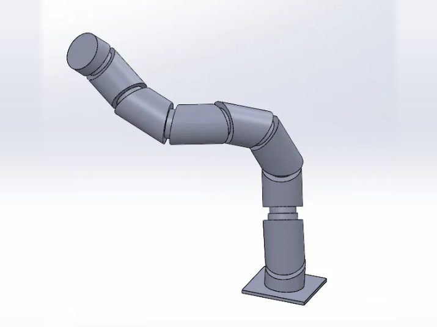

Oct 2026 – Present
Hyper-Redundant Oblique Swivel Joint Manipulator
An 8-DOF hyper-redundant arm (base yaw plus seven oblique swivel joints, β = 22.5°) designed in SolidWorks. I am building a ROS 2 simulation framework (URDF/xacro, RViz) with Jacobian null-space inverse kinematics for reaching into confined spaces.
Ongoing